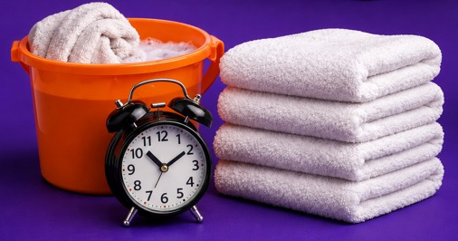
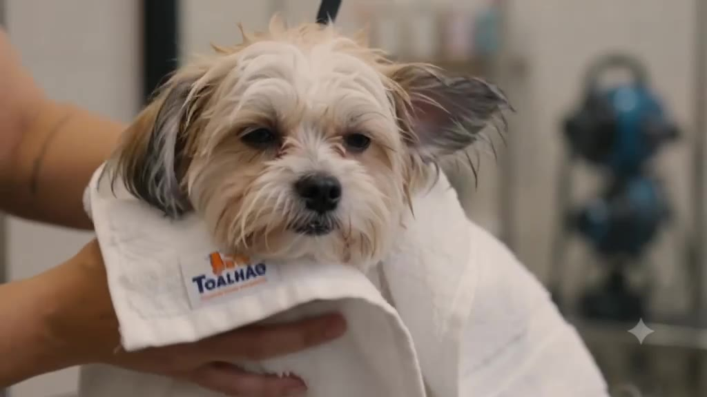
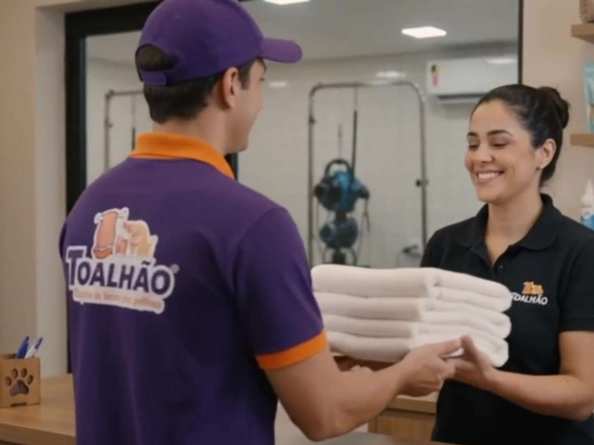
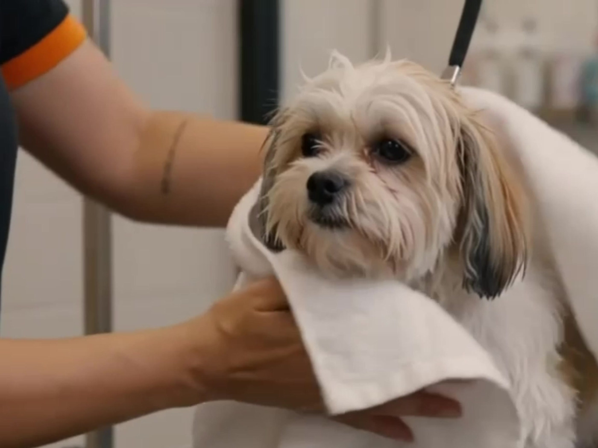
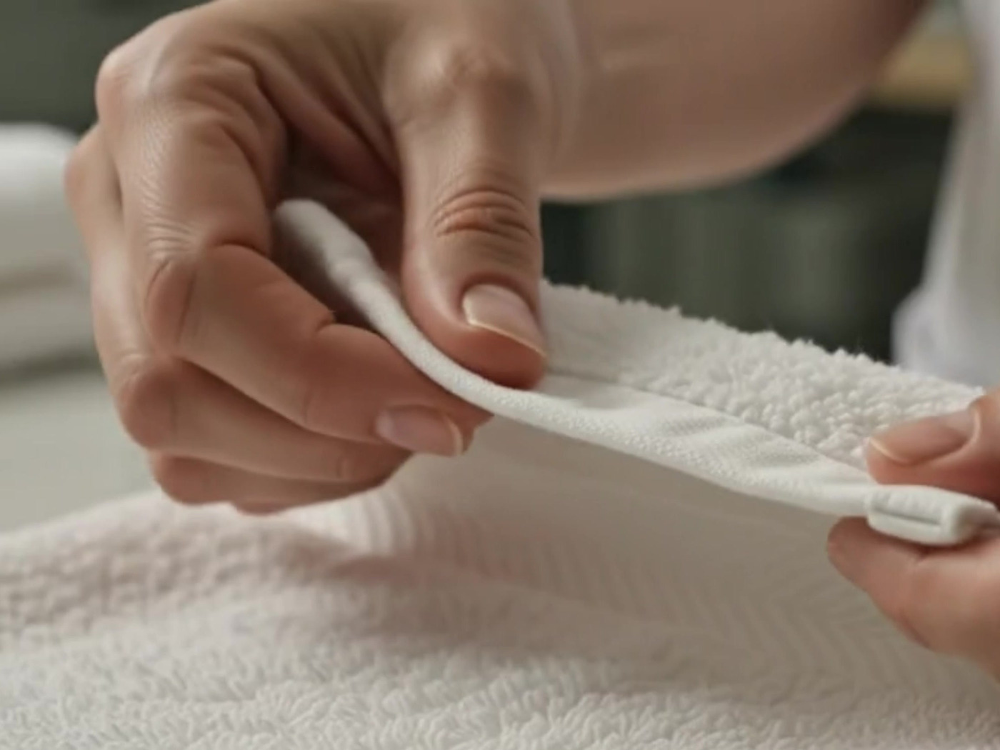
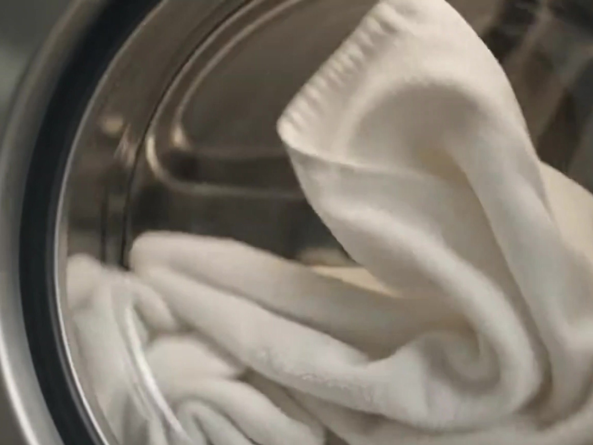
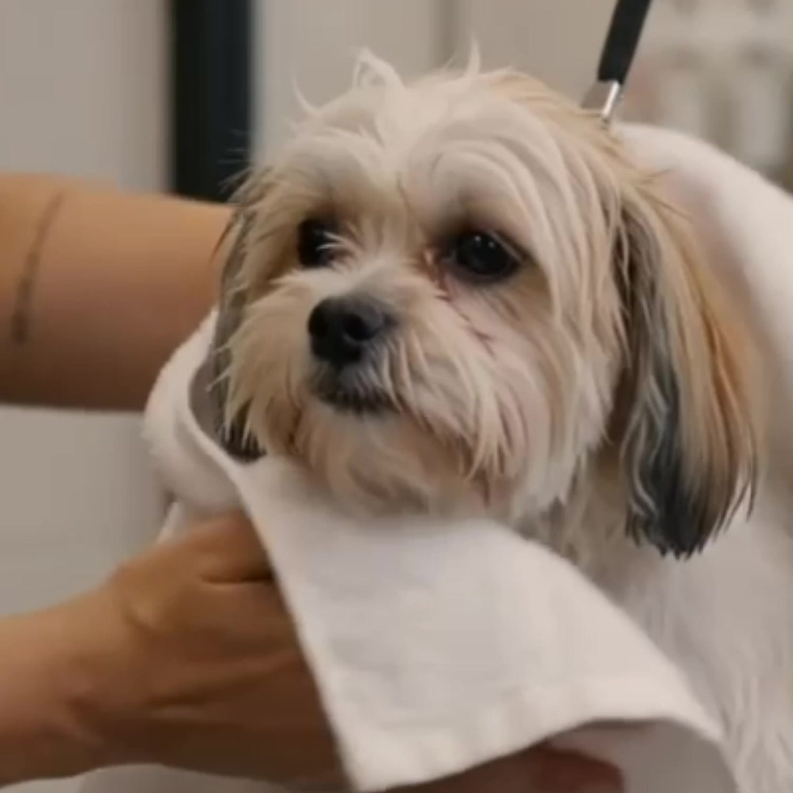

Você nunca espera a sua toalha voltar.
Na lavanderia comum, você manda e aguarda. Aqui o enxoval é nosso e fica girando: o que sai sujo é substituído no mesmo instante por um lote limpo que já estava pronto.
Para petshops →O Toalhão faz locação de toalhas para pet shop e clínica veterinária em Anápolis e Goiânia — rota programada, conferência a cada visita, nenhuma máquina no seu balcão.
Resposta no mesmo dia útil · sem compromisso

Na lavanderia comum, você manda e aguarda. Aqui o enxoval é nosso e fica girando: o que sai sujo é substituído no mesmo instante por um lote limpo que já estava pronto.
Para petshops →
Lavagem térmica a 75°C, secagem industrial e separação por lote. O padrão que uma sala de atendimento veterinário exige, sem depender da máquina da recepção.
Para clínicas →A assinatura
Você deixa de comprar enxoval, de lavar, de secar, de dobrar e de contar. O que chega no lugar disso é um ciclo que roda sozinho e uma fatura que fecha certo.

01 — EntregaLote higienizado e lacrado desembarca no dia fixo da sua rota, sem você pedir.

02 — UsoSem racionar toalha no meio do banho, sem segurar atendimento por falta de enxoval.

03 — ColetaConferência na hora, com o responsável presente. Esse número é o que vai pra fatura.

04 — LavagemLavagem térmica, secagem e separação por lote. E o ciclo recomeça na próxima visita.
"Toalhas de qualidade, excelência no atendimento! Pontual na entrega!"
"Muito boa! Satisfatória experiência onde a palavra que melhor descreve é a qualidade!"
Ver todas as avaliações no Google
A operação roda em duas cidades, com lote separado por cliente e conferência fechada em cada parada — não uma estimativa no fim do mês.

Onde nasceu
Rota fixa semanal em toda a cidade, com reforço programado nas semanas de pico e faturamento local.
Locação de toalhas em Anápolis →
Em expansão
Rotas ativas na região central e sul, com o mesmo protocolo de lavagem e a mesma conferência de Anápolis.
Locação de toalhas em Goiânia →Conte quantas toalhas o seu movimento consome por dia e a gente monta a rota, o lote e o ciclo de cobrança que encaixam nisso.
Falar no WhatsApp →Resposta no mesmo dia útil · sem taxa de adesão
Dúvidas
O preço é por toalha e varia conforme o volume e a frequência da rota — quanto maior o giro, menor o valor unitário. Não há taxa de adesão nem investimento inicial em enxoval. Mande no WhatsApp quantas toalhas você usa por dia e devolvemos o valor fechado no mesmo dia útil, sem compromisso. Se quiser comparar antes, dá para calcular quanto você gasta hoje lavando por conta própria.
Não. O enxoval é do Toalhão. Você recebe os lotes prontos e devolve os usados na visita seguinte — não há investimento inicial em toalha nem custo de reposição por desgaste.
A fatura chega pelo WhatsApp com o detalhamento por visita — o que entrou limpo e o que saiu sujo em cada parada — e boleto em PDF anexo. Também aceitamos Pix.
Você pede reforço fora do ciclo fixo pelo mesmo WhatsApp. Nas semanas de pico previsíveis — feriado, alta temporada de tosa — a gente já sobe o lote sem você precisar pedir.
A conferência é feita na sua frente, a cada visita: conta-se o que entra limpo e o que sai sujo, com o responsável presente. Esse número — não uma estimativa nossa — é o que aparece item a item na fatura.
Lavagem térmica a 75°C, secagem industrial e separação por lote, sem misturar enxoval entre clientes. O processo foi montado para o risco específico de contaminação cruzada entre animais.
Não. A rota é dimensionada pelo seu movimento real: se você usa vinte toalhas por dia, é para vinte que ela é montada. Não há pacote mínimo para começar.
A locação de toalhas para pet shop do Toalhão tem rota própria em Anápolis e Goiânia. Para outras cidades da região, envie seus dados abaixo: avaliamos a inclusão no próximo ciclo de expansão de rota.
Fale com a gente
Diga quantas toalhas você usa por dia e devolvemos o valor fechado no mesmo dia útil. Sem taxa de adesão, sem compromisso.
Chamar agora no WhatsApp →Prefere que a gente chame você? Preencha ao lado.